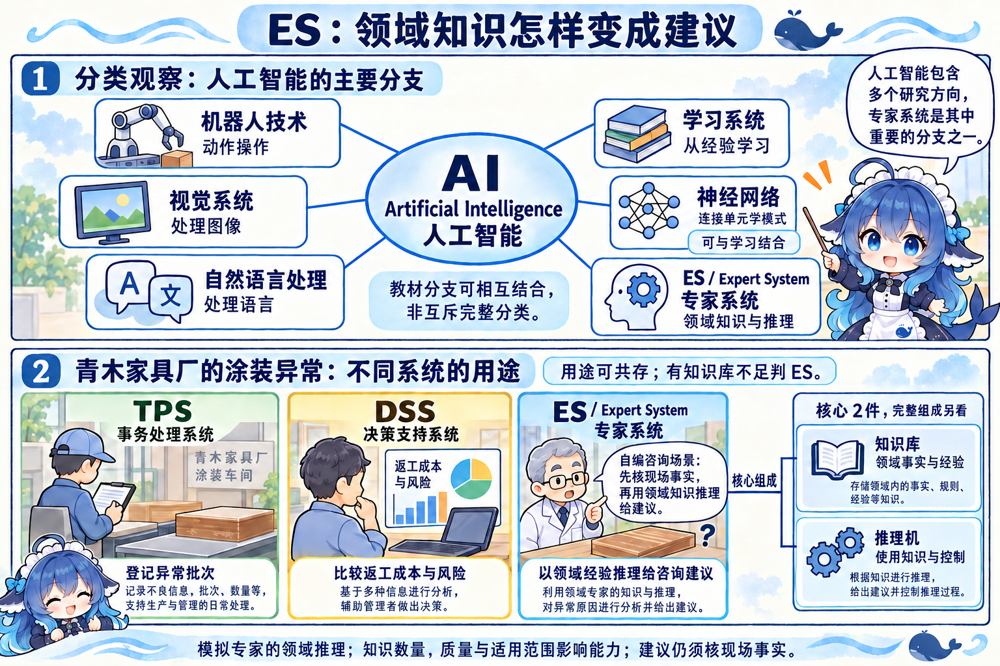
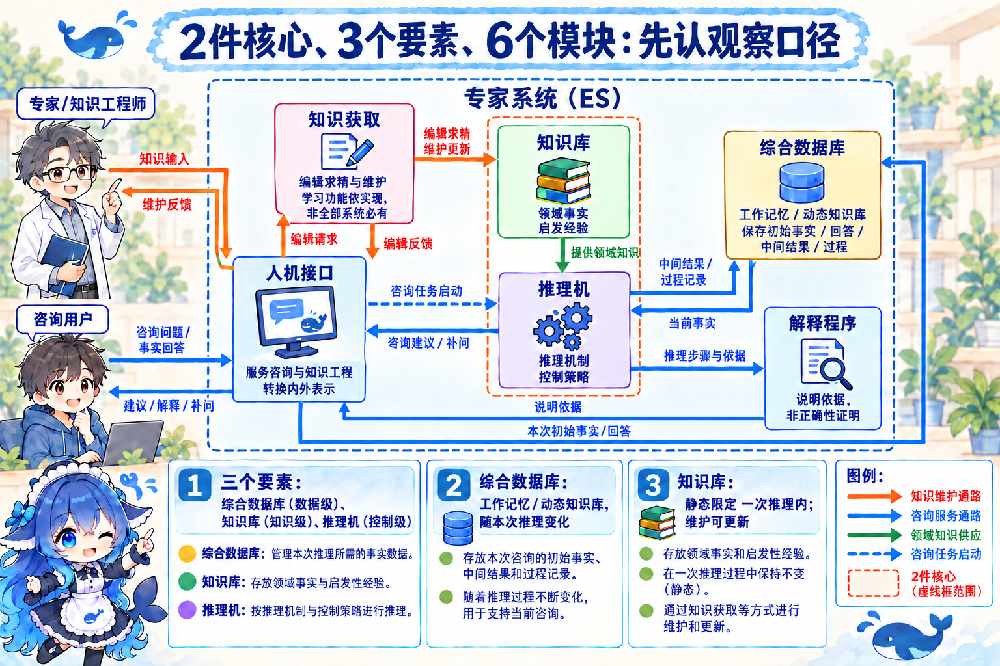
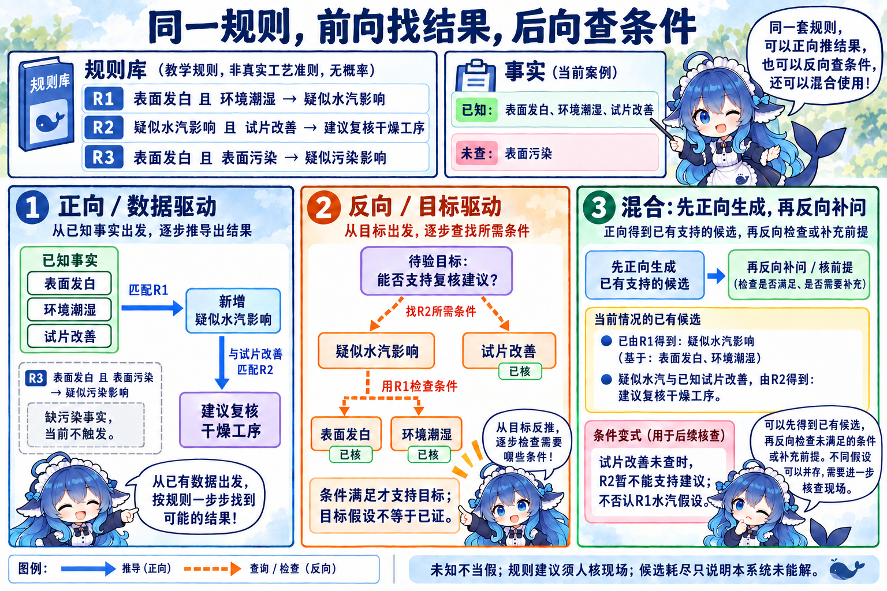

青木家具厂的一批桌面出现发白。TPS 能记下批次和异常，DSS 能帮助比较返工的成本与风险；现场人员接着问：“老师傅会先检查什么，现有事实能支持哪种建议？”这一步需要把专门经验用于当前问题。ES（Expert System，专家系统）利用领域知识和推理过程，求解通常需要专家知识的问题。下面的涂装规则完全自编，只用来观察推理，不作为真实工艺准则。
本节沿教材三个正式小小节展开概念、特点与组成。核心两部件、运行三要素、完整六模块分别回答不同问题；看见一个知识库、一个规则判断或一段自然语言回答，还不足以确认系统的整体职责。
3.5.1 专家系统的概念：知识如何参与求解
专家的价值包括领域中的事实、经验和判断线索。ES 将这些知识表示成可使用的形式，再通过推理与控制程序应用到当前问题。教材用“知识＋推理”概括这种设计中心，用“数据结构＋算法”对照传统程序。两句是结构思想的提示，不能当数学等式，也没有列完系统的组成；专家系统的软件依然要通过算法运行。
例如，按规则计算一批木板的登记数量，工作重点在业务处理；建立工时与成本模型比较方案，工作重点在决策支持；根据领域经验检查异常、形成咨询建议，体现专家知识推理。三个任务可以在同一平台中合作，DSS 也可以使用知识，普通程序也可以有规则。系统选择应看解决的问题、知识来源与使用方式，不能把 TPS、DSS、ES 固定排成等级或替代链。


教材的五项区别可以放在同一张问题清单里理解。第一，ES 常面对半结构化或非结构化问题，借助启发式经验支持求解；它不因此取消算法。第二，模拟对象主要是专家在领域中的推理过程，与只建立领域现象的数学模型不同。第三，综合数据库、知识库和推理机分别体现当前问题数据、领域知识与推理控制，知识与使用知识的程序通常分离，便于维护。第四，面向需要专门知识的实际问题，要求合理时间内可靠工作；这是设计要求，不能由名称推得已经达标。第五，知识的数量与质量、表示和推理方法影响能力，通常限定较窄领域，通用性有限。
知识来源可以包括专家实践、书籍和资料。缺少公认的直接求解方法、输入不完整、专家稀少或专门知识昂贵时，可以评估这种支持方式；前提仍是知识能够取得、表示并校验。规划、设计、咨询、诊断或质量监控都是可用领域例子，不能把“可处理不完整信息”读成缺任何前提也能给可靠答案。
若实现把领域规则与数值计算配合使用，应分别说明规则怎样推理、计算怎样提供结果。有计算或模型不独自排除 ES，正如有知识不独自确认 ES；教材强调模拟专家推理的中心作用，没有禁止程序调用计算模块。
教材还用层级观察说明知识分离：传统程序把数据与程序分作两级，过程计算和控制判断常一起编码；ES 的三要素对应数据级、知识库级、控制级。这是本节的历史设计对照，说明把知识单列出来怎样便于管理，不规定今天所有软件只有两层，也不表示 ES 必须部署三层服务。
AI 是更广的范围，六个分支可以结合
AI（Artificial Intelligence，人工智能）研究和构建具有智能行为的装置或系统。教材列出的行为观察包括：从经验学习并用于新情境；在重要信息不足时处理问题；操作符号、理解图像；想象与创造；使用启发。它们描述能力方向，不要求每个系统具备全部，更不直接证明系统具有人的全部智能。
从经验学习和迁移需要相应的软件与机制支持，装置并非自动具备这种能力。对本次咨询而言，规则由专家编辑和核查，也能形成知识系统；是否会自动学习另看实现。
本教材的主要分支图列机器人技术、视觉系统、自然语言处理、学习系统、神经网络和专家系统。机器人可结合视觉，神经网络可用于学习与语言处理，专家系统也可配合其他技术。图是教材选取的观察，不是永久完备且互斥的产品分类。学习系统强调从经验改进，神经网络强调连接处理单元的模型方式；不能将这两个不同名称简单解释为互相排斥。
跨章题还会改变分类轴。弱人工智能（Weak AI）与强人工智能（Strong AI）在 Searle 的原文中区分计算机作为研究心智的工具与适当程序真正具有心智的立场；专家系统、神经网络则是技术分支。这组名称不直接判定某个现代产品的心智，也不能靠“会推理”三个字将两条分类轴合并。


历史补充按一手提案核对：John McCarthy 等人的 1955 年 8 月 31 日研究提案已使用 Artificial Intelligence，计划在 1956 年夏季于 Dartmouth 开展研究。教材以 1956 年研讨作为学科形成的时间节点；术语在提案中出现与活动举行要分开，不沿用 OCR 的 MeCarthy 拼写或旧时“现为教授”的身份描述。
3.5.2 专家系统的特点：复制经验，也保留使用条件
老师傅不在夜班，已建立的规则仍可被咨询；同一套知识还可以带到另一车间。这解释了教材所说的超越时间限制、易于传递与复制。软件可用仍依赖设备、服务和维护，复制后的知识也需要核版本与适用领域，不能由“恒久”推得系统不用维护。
知识获取和系统建设有前期成本，重复咨询可能带来较低的日常操作成本；是否合算需看实际投入、维护与使用规模。固定规则、事实与控制策略下，处理可以保持一致；一致性描述重复条件下的表现，没有证明规则和事实正确。经验规则及推理程序能帮助部分复杂、费时或重复的任务，性能和结果仍需验证。

最后一项是适用特定领域。换了漆种、设备或工艺，就可能改变规则的适用范围，需要重新获取和检验知识。狭窄领域提高专门知识的可用性，不能保证其中每个问题都有解。教材比较表中“ES 处理数字与符号、一般系统处理数字”突出当时的知识处理视角；普通软件同样能处理符号。准结构性是表中的历史说法，可在此对应部分结构明确的决策，不另造一个与半结构化互斥的等级。
表 3-1 还有功能和问题类型两条轴：ES 的典型功能包括求解、解释结果、判断与决策；一般系统以求解为对照。ES 多用于准结构性或非结构性问题，可处理不确定知识并限定领域；一般系统在该表中多用于结构性问题、确定知识。读题时保留这套教材口径，工程上仍需看具体产品：一般软件也能解释和支持决策，ES 也会处理明确的条件，不能把表格变成排他的功能许可。
教材随后用物流说明知识的用途：把数据和信息转为可用知识、吸取和分享专家意见，并将知识作为竞争资源管理。家具厂配送中心同时涉及物流、商流、信息流与资金流，可以将异常经验用于咨询。书中关于原型收益和“目前应用有限”的文字属于当时观察，本册没有把它换算为今日物流行业的覆盖率或收益保证。


3.5.3 专家系统的组成：三个数量分别数什么
核心是知识库与推理机；三要素是综合数据库、知识库、推理机，对应问题数据、领域知识和控制；本小小节完整介绍六个功能模块，另有知识获取、解释程序和人机接口。功能模块不要求部署为六个进程。教材图 3-14 只画专家、知识获取、核心和用户接口的简图，未画综合数据库与解释程序，不能用省略的图推翻后面六项正文。


知识库存领域知识：事实性知识包含定义和已知事件，启发性知识来自领域经验，常有较窄的适用条件。表示要准确、简洁，组织要便于模块化和维护；除了存放，还要支持检索、排序、增删改等管理。经验难以获得不代表它永远正确，事实知识容易取得也不代表它可以省略。
本次事实放哪：综合数据库与静态知识库
综合数据库是本次推理的工作存储，保存问题初始状态、用户回答、中间结果和过程记录，也称动态知识库或工作记忆（Working Memory）。当前“表面发白、环境潮湿、试片改善”是输入事实；推出“疑似水汽影响”后又新增中间状态。它与订单系统的长期业务库用途不同，“数据库”名称也不规定必须采用某种数据库产品。
相应的领域知识库在一次推理中保持不变，故称静态知识库。知识获取、专家维护或确实实现的学习功能可以改变它，静态不表示永久只读。教材还说综合数据库与知识库一起构成完整知识内容；这是一种知识存储范围观察，不能据此把推理机从系统核心删除。两者表示和组织相配合，便于推理机使用。


推理机：从事实找结论，或从目标查条件
推理机（Inference Engine）也称控制结构或规则解释器，包含推理机制与控制策略。它搜索和使用知识，控制求解任务；知识与使用知识的程序一般分离以增加模块性和维护便利。正向推理又称前向推理，是数据驱动，从条件出发推导结论；反向推理又称逆向推理，是目标驱动，先设待证目标，再检查能支持它的条件。双向或混合推理结合两种方向，生成候选后再验证，或按需要协调两过程。这里的“双向”是控制方式，不能用组件双向箭头解释。
教材以目标解空间大小作为选择线索：目标较广时正向可从事实展开，目标少时反向可集中查条件；具体规则、输入和控制成本仍要考虑，不能设成只有一个条件的强制标准。以下三条规则和当前事实全部给出，各图和自测继续使用这些身份。
- R1：表面发白且环境潮湿 → 疑似水汽影响。
- R2：疑似水汽影响且试片改善 → 建议复核干燥工序。
- R3：表面发白且表面污染 → 疑似污染影响。
当前已知表面发白、环境潮湿、试片改善；表面污染尚未查。本例把未查当作证据不足，不能当作假，也不能当作已真。所有规则是自编教学规则，输出是规则内建议或假设，没有真实工艺概率或确诊依据。


正向先用发白与潮湿匹配 R1，向工作记忆加入疑似水汽；它与试片改善再匹配 R2，得到复核建议。R3 缺污染事实，当前不触发。反向先问“能支持复核建议吗”，找到 R2，需要疑似水汽与试片改善；疑似水汽又找 R1 检查发白与潮湿，三个已知前提核实后，目标才在规则内得到支持。从目标指向前提的检查线不反转逻辑蕴涵，不能因为看见建议就认定真实环境必潮湿。
混合在当前基线下可以先正向得到水汽候选，再后向检查 R2 的其他前提。若另设条件变式：起初只知道发白和潮湿，试片改善也未查，则需要通过接口补问、得到并核实回答后才能支持 R2。当前已知与该变式要分开。若新事实记录撤去试片改善，重新计算时 R2 暂不能支持建议，R1 的水汽假设仍可得到支持；不直接沿用旧建议，也不因此否认水汽假设。


知识获取：把经验编辑成可维护的知识
领域专家提供经验，知识工程师帮助整理成内部表示。知识获取承担编辑与求精、增改删，以及相关修改，维护知识一致性和完整性；教材还描述从运行经验自学习、发现规律的能力。学习需要实际功能和验证，不是每套 ES 都自动拥有。咨询期间的用户回答先改变当前工作事实；不能默认每次回答都重写长期领域规则。
解释程序：哪条事实和规则支持了建议
用户追问“为什么”，解释程序可按推理顺序显示所用数据、知识、步骤和根据，也可说明系统过程、性能与行为。本例解释链是“发白、潮湿→R1→疑似水汽；疑似水汽、试片改善→R2→复核建议”。它让人检查事实是否误录、规则是否过期或漏了条件。清楚的解释有助于评估合理性，没有自动证明规则正确或现场已经确诊。
人机接口：咨询用户和知识工程两侧
人机接口接收用户命令、问题和回答，转换成内部表示并启动推理，返回问题、建议和跟踪解释；也支持领域专家与知识工程师输入知识、了解系统表现并改进知识。两侧都有输入输出，不能把接口只写成结果显示器。图文声像的多媒体界面可依自然语言、语音、图像或文字识别等技术扩展，具体是否实现仍需看产品。
求解过程：尝试失败后，怎样继续
教材的通用过程先按用户问题搜索相关知识，再结合控制策略形成操作途径和假设集合；按准则排序并选候选，随后尝试求解。失败则取下一候选，循环到问题解决或候选耗尽。它描述一般求解控制，不把全部系统或前向推理限定为同一固定六步实现。
另设一个检查途径控制变式，不修改上面的 R1–R3。问题是“找到能与该批次对应的检查记录”，已知有两个候选途径：H1 查含水记录，H2 查工序记录；两者都必须满足“记录可取得且批次可对应”。规则经验让 H1 排在 H2 前。实际检查发现 H1 的记录缺失，故这条途径失败；H2 的记录可取得且批次可对应，故第二条途径完成了当前查记录任务。排序只决定先查谁，证据才决定途径是否可用。这个成功没有认定发白的物理原因，也没有推出 R2 的工艺建议。若 H2 同样失败，则两条已列途径均不能完成任务，系统只能报告当前候选范围内未解。


给定上述仅三条规则，若没有试片改善、污染仍未查，就不能支持 R2 或 R3 的对应结果；可以保留 R1 的疑似水汽，再说明缺少进一步依据。不能凭规则耗尽编出新结论或宣布现实无法修复。职责清楚、事实可核、适用知识有效，才让咨询结果具有使用基础。
回到这批发白的桌面
关联架构题另看组件组织。黑板（Blackboard）风格让多个知识源围绕共享求解状态工作，并由控制机制安排下一步；某些复杂知识协同问题可采用这种组织。ES 的“规则解释器”是推理机别名，描述的是知识执行与控制职责；名称没有规定必须用黑板，也没有证明解释器永远不能处理不确定问题。语音识别等题仍须回读给定阶段、知识协同和选项，不能由应用名字独自判架构。


批次记录由业务处理提供，返工方案可由决策支持比较，领域知识咨询由 ES 帮助形成检查建议。专家系统先把当前事实与领域知识分清，再按控制策略推理，通过接口继续问答，用解释程序展示依据。换规则、事实或目标时要重新检查支持链；换领域时还要重新核知识。核心、组成、控制方向与 AI 分支各自保留观察范围，选择就有了可追溯的理由。